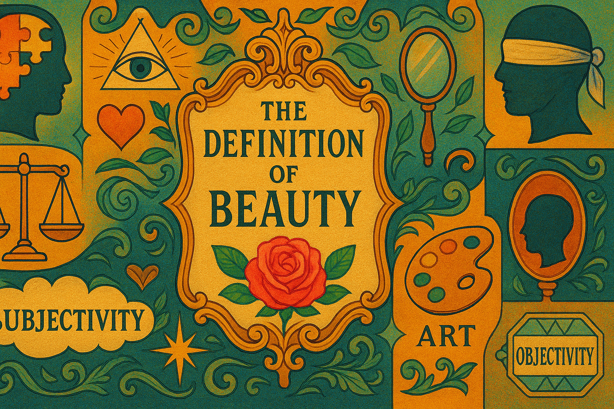
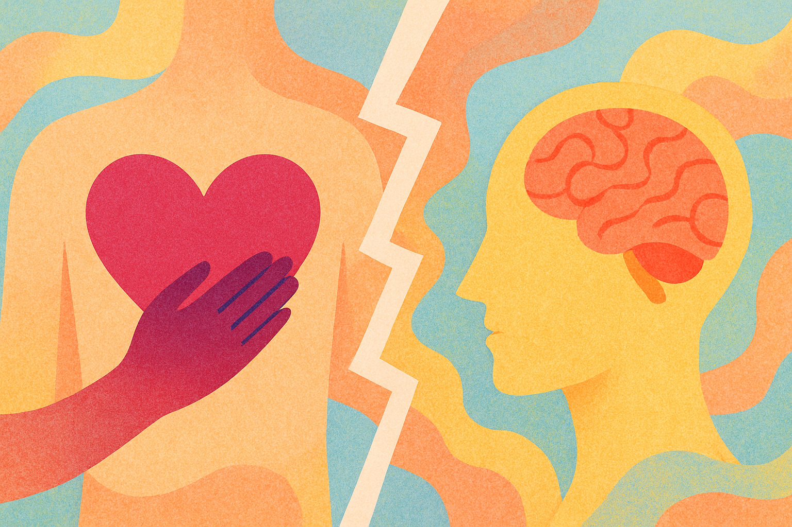

Wherever Philosophy Takes You (part 4: Beauty and Love)
The definitions of beauty and love
Beauty and love are either the greatest truths or lies of the world. Here's a brief discussion on it.
Beauty
As of 2025, beauty is one of the most elusive and conceptual topics of the world. Tinted differently through the many glasses of feminism, objectification, evasion, art and philosophy, the definition of true "beauty" seems as ungraspable as always.
Beauty has always been timeless: in the seventeenth century, it had been commonly associated with human virtues such as goodness, honesty and chivalry. As civilization evolved, its definition has become more touchy, less accessible, and commonly attributed to traits such as anti-feminism and objectification, but it remains a romanticized concept.
One of the most common arguments about beauty is its subjectivity. Some argue that beauty, in many cases, is objectively present, while others argue that "beauty is in the eye of the beholder." The latter is one of the most modernized and politically correct beliefs, but perhaps the truth is so much less simple than that. To claim that beauty is entirely subjective implies that a world without perceivers is one without beauty or ugliness. On the other hand, asserted "objectivity" of beauty claims that there might be a scientific quotient for beauty, which is equally conceptual.

Eighteenth-century philosophers Kant and Hume agree that to say beauty is completely relative to its perceivers is to erase the paramount value of beauty in the first place. They argue that if beauty were to be completely subjective, then the usage of the word "beauty" would lose its relative meaning in daily contexts, used only to to express an approving personal impression, when the word's cultural intent runs deeper than that.
On the other hand, many philosophers of the late nineteenth century believed that beauty was a value instead of a perception; an emotion of pleasure upon seeing something physically attractive. However, I rather agree with writer Crispin Sartwell's contradiction, that when we point out the beauty of a night sky, it isn't to report a personal sensation of pleasure but to remark on an outward projection of aesthetic attraction. Beauty, Crispin argues, is about how we aesthetically appreciate objects outside of ourselves. (Although then again, that report of outward admiration could very well be a disguise for inner admiration, for admiration is a value.)
If we were to take the belief that beauty was a mere sensation of aesthetic pleasure, similar to happiness, then beauty wouldn't be subjective as much as it would be personal. Beauty, then, would be dependent on human interactions and personal moods, a mere representation of our personal experiences.
Philosopher Kant took on a similar view by stating that beauty is the mental representation of an object for its own sake. For example, when walking in a museum, if a person's thoughts are filled with the expensiveness and cash-fetching techniques of a painting, then they are not admiring the beauty of the painting but considering the result of that beauty. The same applies for buying a watch and instead of admiring its golden quality, to calculate how much the gold would fetch on eBay. Kant believed that beauty could be fit into the equal frame; that during the so-called admiration of beauty, we are not appreciating the fullness of it but instead remarking on the social or economic associations with beauty.
Whether beauty be subjective or objective, emotional or observational, associational or relative, it is undeniable that the concept of it has sparked intriguing debates on society, emotion and value.
Putting aside the conceptual aspects of beauty, the impact of social perception and cultural learnings on its definition is also notable.
The world has gone through ages where plumpness was pleasant, teeth-blackening was flattering, feminine features were in and then, conversely, bony bodies too. Many would say that these varying beauty standards is what proves the subjectivity of beauty. After all, if the tide of beauty standards is always being contained by the differently shaped glass jars of society, why doesn't that flexibility show for its subjectiveness?
However, that brings up a separate question: Must objectivity be permanent? Could the objectivity of certain concepts change through the development of society?
I believe that is so, that for concepts such as beauty, companionship and love, their accessibility, acceptability and objective roles could very well be swept up by the differences in time.
Nevertheless, the influence of social acceptance on beauty remains, sparking questions on the true importance of localized interpretation.
Beauty has also played extreme roles in politics, economics and advertising, with each societal ideal selling the equal definition of beauty that benefits marketing landscapes of Marxism, radical advocation and partisan finance, though data on that is more objective, which is why I will not be going into it.
At the end of the day, it is my opinion that the larger scale of beauty rather tilts objectively, but the subjectivity is found in the varying shades of tinted glasses in which we view the angle of the tilt.
Love
Love is rather an interconnected subject to beauty. Many view beauty as the doorframe behind which love awaits, while others believe that beauty is a symptom and invitation for love.
Scientifically, love is nothing but a mix of chemicals in the human brain that evokes emotions such as passion, companionship and joy. But if its definition was so simple, why are so many great films, literature and plays based after the pure celebration of love?
We can't talk about love without mentioning marriage first. Recently I have been reading an autobiography on Agatha Christie written by Lucy Worsley, and she introduced an extremely interesting observation on how marriage changed after the second world war: before, Worsley states, marriage had been more about long-term companionship and mutual stability. But after the war, passion and the romantic aspects of marriage became more prioritized, which is another reason why cheating became less frowned upon.
This swerve from companionship to fervor inadvertently brought on a new layer of meaning to love: romance. Ever since then, the social perception on "love" has swerved into passion, raising the question of love's subjectivity.
Personally, love definitely seems to change within society, but the core meaning remains consistent: it is a yearning of the human nature. The only thing that "changed" about love is that every single time, different aspects of it have been highlighted: loyalty, companionship, passion, etc.
Many philosophers of the history have claimed that love cannot be examined, as that would be the examination of public behavior. They believe that private knowledge and personal emotions are instead what love is made of. On the other hand, if we were to adopt that belief, then the literature and films of history illustrating love become meaningless and a mere shadow of this emotion, since the act of love cannot be portrayed physically nor examined and only watched from the sidelines. Philosopher Socrates rather agreed with this ideal by stating that love is an emotional entity: untouchable, indescribable and forever beyond humanity's intellectual grasp. He believes that love transcends time, culture and society, forming a ubiquitous language belonging to the higher realms. In other words, to adopt a less extreme view, love is a complex, indescribable human emotion that can never be portrayed in its fullest using words or pictures.
But is love human emotion? Love seems to be a stronger term than "joy" or "anger", as it consists of multiple human emotions instead of a singular, named one. That raises the question of whether love consists of a pattern of behaviors, or a mere belief within the human awareness. The belief that love consists mainly of emotions is to believe that love exists mentally, but that contradicts with how we as a society see a "happy" or "unhappy" marriage, as the usual dam dividing one from another is the former pattern of behaviors.

Personally, it wouldn't be a surprise if love was proved to be detached from the physical cognitive line, similar to the soul. Whether or not humans have souls is arguable; a soul could very well be a pattern of behaviors sparked by human chemistry. The same applies to love. But unlike a regular value or pattern, love seems to wind deeper into a part of a person's core identity—affirming to the common belief that the lover is passive to the beloved. This rather supports the belief that love exists mentally inside of human awareness, which is an ideal that I prefer over the belief that love exists in behaviors.
But to claim that love is formed both through behaviors and through timeless devotion is conceptual too: for it claims that a man without action is one with any less love, and that the social boundaries for behaviors typically interpreted as "love" should affect the existence of such, or if the boundaries should affect love, would lessen the spirit of love any less.
In parallel, other types of love including love from parents, siblings, mentors and friends are not to be ignored either, and all of them present different philosophical aspects of love: if love transcended everything, shouldn't it be unified and one among everything it influences? If friendship was about companionship and loyal love and nothing else, what more does romantic love offer outside of passion? Does love reshape itself through different criteria of humanity? Or has it never been love at all, merely an illusion from human chemistry formed through our desires?
Maybe at the end of the day, love is everything Socrates said it was: timeless, unreachable, and jeweled.
To conclude this passage on both love and beauty, they are two extremely romantic and philosophical topics that I did not know much of until I did research (which is why this passage has a lot more quotes, excerpts and common beliefs than usual (I usually don't do research)). Regardless, beauty and love will continue to transcend centuries and, who knows? Maybe one day we'll finally catch up.
To be continued... (next week's topic: conceptuality and perception)
← Back to Blog